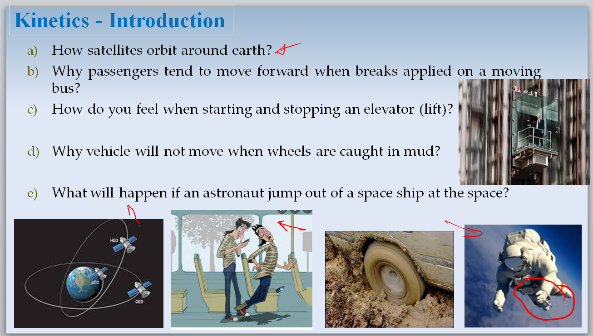
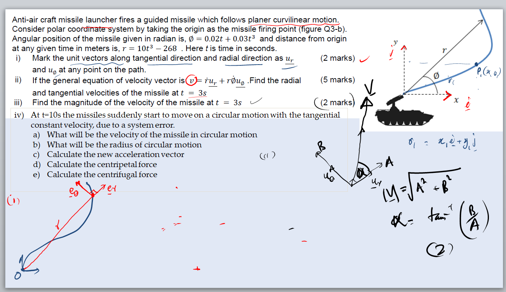

Sample Lecture
A sample lecture demonstrating my approach to explaining engineering concepts and connecting theoretical principles with practical examples.
A detailed overview of my teaching philosophy, teaching strategies, university teaching experience, pedagogical development, and approach to engineering education.
In order to ignite student motivation, which fosters understanding, and to build competences within a subject, it is not sufficient for the teacher to master the content alone. A teacher must also foster a learning environment where students are encouraged to explore, question, and apply knowledge in meaningful ways (Bruner, J. 1966). I believe that effective teaching extends beyond delivering subject content. A teacher should create a learning environment where students are encouraged to explore; particularly when students are adapting to new educational and cultural environments.
My teaching approach combines active learning with structured explanations. I typically begin a topic with a simple, general example that introduces the concept, followed by the relevant theoretical foundations. I then connect the theory to real-world, engineering and question-based examples, encouraging students to participate through discussion and, hands-on activities, where appropriate.
This approach is intended to help students develop confidence and independence in their learning while encouraging critical thinking and collaboration. Ultimately, my goal is not only to support knowledge acquisition, but also to help students develop the skills and mindset needed for their academic and professional careers. Through interactive discussion and practical activities, students are encouraged to participate actively and apply the concepts they have learned.
My teaching strategies are designed to align closely with my philosophy of fostering motivation, understanding, and competence. I aim to create an engaging, student-centered learning environment where students actively construct knowledge and apply it to real-world problems.
I provide students with pre-lecture materials through Moodle, including reference videos, recorded micro-lectures, and lecture slides with key points. These resources introduce key concepts before the main lecture, allowing students to become familiar with the topic and prepare questions in advance.
This approach accommodates different learning preferences, as some students benefit from text-based materials while others benefit from visual or multimedia content. By providing lecture materials in advance, students can focus during the lecture on understanding concepts, participating in discussion, and applying their knowledge rather than simply transcribing notes.
During lectures, slides are gradually developed, and students are encouraged to develop their own lecture notes. This promotes active engagement, critical thinking, and deeper processing of the material. Students learn to organize information in ways that make sense to them, supporting long-term retention and independent learning.
Each section begins with a compelling, real-world general example related to the topic, providing practical context and capturing students' attention. I then provide structured explanations, starting with a simple example that leads into the theoretical concepts, followed by applied-engineering and question-based examples that encourage students to think critically and apply the concepts they have studied.
Through interactive discussion, students are encouraged to participate actively and develop the ability to explain and analyse the examples themselves. This provides opportunities for students to connect theoretical concepts with practical situations and develop confidence in solving engineering problems independently.


For subjects involving extensive calculations and problem-solving, I conduct (with help of demonstrators) separate tutor sessions with smaller groups. These sessions provide students with focused guidance and additional opportunities to work through problems, ask questions, clarify difficult concepts, and build confidence in applying the theory independently.
Tutor sessions are generally followed by take-home assignments, giving students an opportunity to work through problems independently and demonstrate their understanding. After the submission deadline, I provide detailed worked solutions, often as handwritten solutions, so that students can compare their approaches with the correct solution, identify their mistakes, and understand how to improve their problem-solving process.
I have found that handwritten worked solutions can also make complex problems feel more approachable. Seeing the solution developed step by step in a form similar to the work students produce themselves can help communicate that difficult engineering problems can be solved through a systematic process, encouraging students to develop confidence in their own ability to solve them.
View an example of a handwritten worked solution →I view assessment not only as a means of measuring students' knowledge, but also as an opportunity to reinforce learning through practical application. Assessments are designed to encourage students to apply concepts, work through problems, and demonstrate their understanding.
Formative feedback plays an important role in my teaching approach. I use feedback to help students identify areas for improvement, reflect on their learning, and develop stronger critical-thinking and problem-solving skills.
I maintain an open and approachable teaching style, providing guidance and support as students work through course content and navigate university learning environments. I aim to create an atmosphere where students feel comfortable asking questions, seeking clarification, and discussing challenges related to their studies.
In addition to my teaching responsibilities, I also served as a student counsellor within my department. This role provided me with opportunities to support students beyond the classroom, including listening to their concerns, providing guidance, and helping them navigate academic and personal challenges that could affect their university experience. This experience strengthened my understanding of the importance of student wellbeing, empathy, and approachable communication in effective higher education.
I also use digital learning environments such as Moodle to support communication beyond the classroom. Discussion forums provide students with opportunities to ask questions, participate in collaborative discussions, and share ideas with their peers.
These interactions encourage peer-to-peer learning and contribute to a more collaborative and interactive learning community. I believe that effective student support involves not only helping students understand the subject matter, but also creating an environment in which they feel supported and confident in their ability to learn.
Staff Development Centre · University of Kelaniya
I completed the Induction Programme for Lecturers conducted by the Staff Development Centre of the University of Kelaniya. This mandatory programme provided formal preparation for university teaching and academic practice.
The programme covered teaching and learning methods, assessment and evaluation, curriculum design and revision, ICT in higher education, teaching practice, research in higher education, student development and counselling, university administrative procedures, and strategic planning and management.
This training has contributed to the development of my approach to student-centered teaching, course planning, assessment, and reflective teaching practice.
View programme details at the University of Kelaniya →Selected examples of teaching practice, instructional materials, and problem-solving activities that demonstrate how I translate my teaching philosophy into practical learning experiences.
These lecture videos were recorded during the COVID-19 pandemic in 2021–2022,
when online teaching was still a relatively new practice in our teaching environment.
The sessions were conducted using the limited infrastructure and resources available at the time,
demonstrating my ability to adapt teaching methods and learning materials to a rapidly changing educational environment.
My in-person teaching follows a more interactive approach, incorporating active discussion,
and direct student engagement.
These approaches allow greater opportunities for interaction, immediate feedback,
and active participation in the learning process.
A sample lecture demonstrating my approach to explaining engineering concepts and connecting theoretical principles with practical examples.
A tutorial session demonstrating structured problem-solving, step-by-step explanation, and guided application of engineering concepts.
An example of how theoretical concepts are developed through worked engineering problems and interactive explanation.
A selection of lecture notes, presentation slides, and other teaching materials developed for university engineering courses. These materials illustrate how theoretical concepts are structured and presented to students.
View selected lecture materials →Examples of engineering problems used to guide students from theoretical concepts to practical application. Worked solutions demonstrate the step-by-step reasoning and systematic approach used in problem-solving.
View worked example →I aim to further develop my teaching through interdisciplinary approaches, particularly by connecting engineering, biomedical data science, and applied computational analysis.
I am also interested in developing student-centered and blended teaching approaches and contributing to modern engineering education environments.